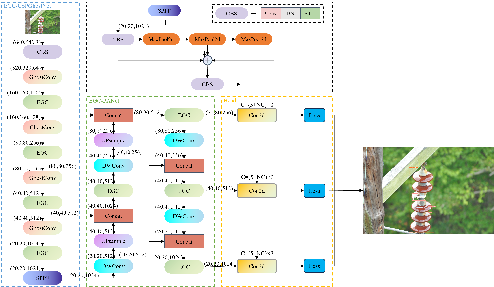
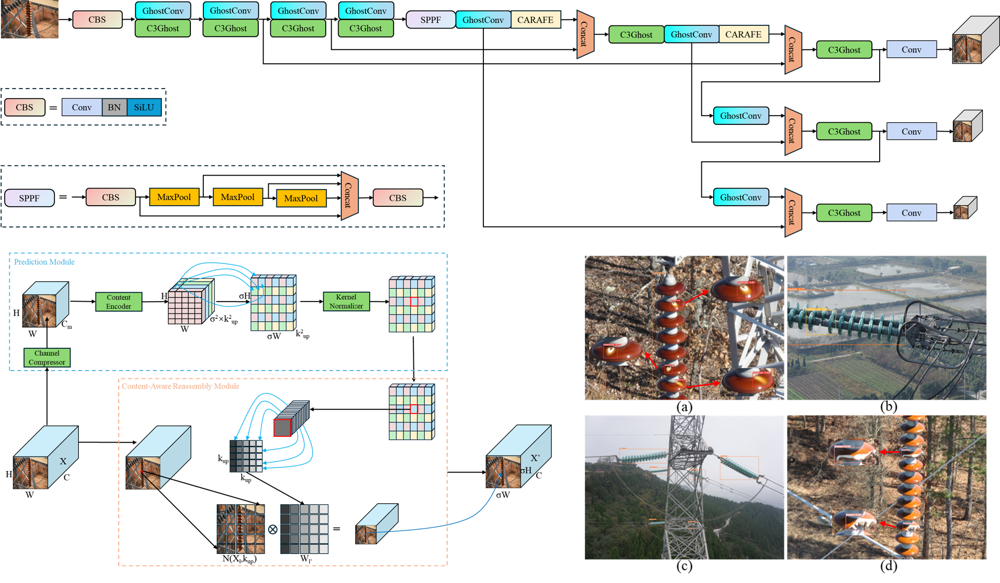
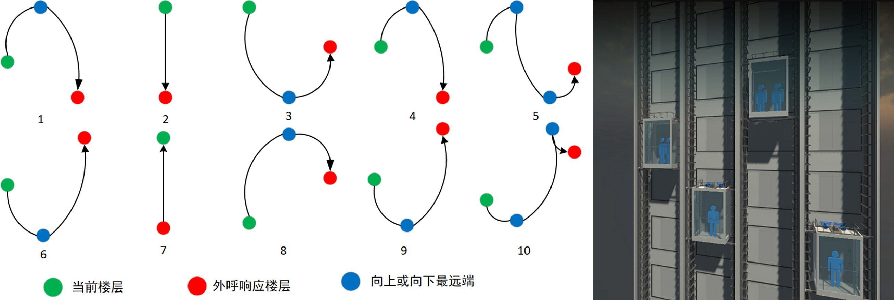

Yang Lu(卢阳-天津理工大学) |
Journals:
|  |
[1] LiteYOLO-ID: A Lightweight Object Detection Network for Insulator Defect Detection
Dahua Li, Yang Lu* † ‡, Qiang Gao, Xuan Li, Xiao Yu, and Yu Song IEEE Transactions on Instrumentation and Measurement (TIM), 2024. (SCI Q1, IF=5.6) [Code] |
Conferences:
|  |
[1] IDD-YOLOv5: A Lightweight Insulator Defect Real-time Detection Algorithm
Yang Lu, Dahua Li, Qiang Gao, Xiao Yu, Xuan Li, and Zhongli Bai Proceeding of the IEEE International Conference on Mechatronics and Automation (ICMA 2024), 2024. (EI, Oral) [Code] |
Patent:
|  |
[1] 一种电梯群控调度方法及系统
李大华;卢阳†;高强;田禾;李栋;毛泽民;赵学文 [Paper] |
* 表示通讯作者， † 表示学生第一作者， ‡ 表示共同第一作者